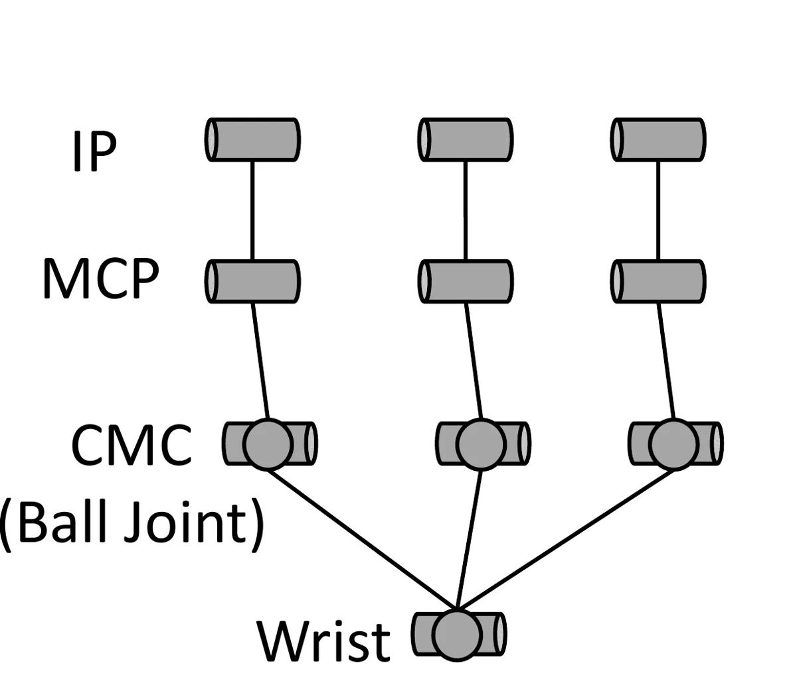
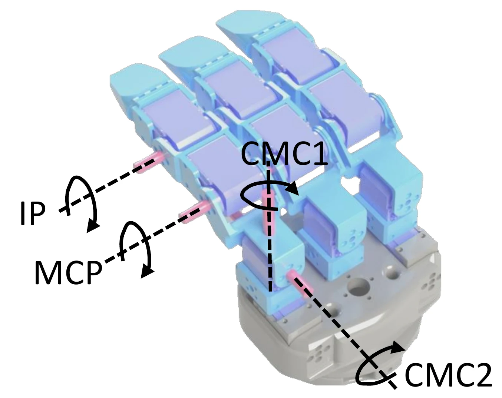
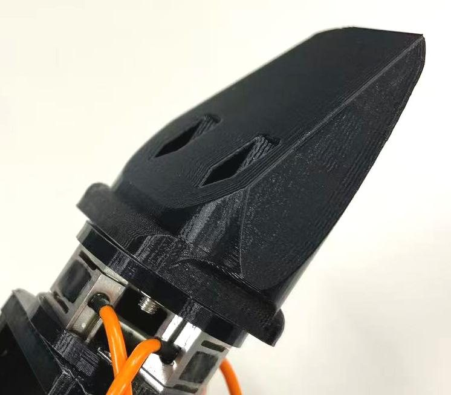

Hardware
A 12-DoF, three-finger hand for about $200 in parts. Printed finger structures, aluminium joint housings, and twelve of the same hobby-grade serial bus servo.
3D model
Open a model, then drag to rotate, scroll or pinch to zoom, and right-drag to pan.
Rendered views of the hand and its parts. The interactive 3D viewer opens shortly.
Specifications
| Layout | Three identical thumb-like fingers, arranged radially |
|---|---|
| Degrees of freedom | 12 (4 per finger) |
| Joints per finger | IP, MCP, and a two-axis CMC base |
| Finger length | 162 mm (links 62 / 50 / 49 mm) |
| Actuators | 12 × Feetech STS3215, magnetic encoders |
| Servo loop | 200 Hz, < 5 ms command latency |
| Transmission | Direct linkage |
| Mass | ≈ 1.8 kg |
| Pullout strength | 62.5 N |
| Fingertips | Interchangeable: rigid wedge, soft cleaning tip |
| Force sensing | Optional three-axis module per fingertip (release R2) |
| Cost | ≈ $200 hand, + ≈ $170 per sensing fingertip |
The base hand works on its own for about $200. Force sensing is an add-on: each fingertip adapter takes either a plain tip or the sensing module below.
Joint layout
Every finger has the same four joints: an interphalangeal (IP) joint, a metacarpophalangeal (MCP) joint, and a compound carpometacarpal (CMC) joint with two axes, CMC1 and CMC2.


Fingertip force sensor
Optional add-on, part of release R2.
Each sensing fingertip carries three miniature S-type strain-gauge load cells, set in an equilateral triangle between two rigid plates. Their sum gives the normal force; a calibrated linear map of the three readings gives the two tangential components.
The fingertip tool mounts on the outer plate and is mechanically decoupled from the load cells, so swapping a rigid wedge for a soft cleaning tip needs no recalibration.
| Output | Three-axis force: normal and two tangential |
|---|---|
| Load cells | 3 × S-type, 0–5 kg each |
| Calibration fit | R² > 0.986 on every axis |
| Aggregate error | 0.349 N RMSE |
| No-load noise | 0.0034 N mean, 0.0129 N max (std) |
| Peak load seen in tasks | 63.1 N normal |
| Cost | ≈ $170 per fingertip |

Wedge-shaped rigid fingertip mounted on the sensing module.
Fingertips
Two interchangeable fingertips mount on the sensing module. Because the tip is mechanically decoupled from the load cells, swapping one for the other needs no recalibration.
Downloads
Geometry is provided as neutral STEP and printable STL. Links go live with release R1.
Licence. Hardware files (STEP, STL, drawings, bill of materials, assembly guide) are released under CC BY-NC-SA 4.0: free to build, modify and share for non-commercial use, with attribution and under the same licence. Code and simulation models are released under the MIT licence. For commercial use, contact the corresponding author.
- Assembly STEPFull hand, single finger and fingertip sub-assembliesDownload
- Printable STL setOne file per part, with quantity, orientation and print settingsDownload
- Machining drawingsDimensioned PDF drawings for the aluminium partsDownload
- Bill of materialsEvery part with quantity, price and purchase linksOpen
- Assembly guideStep-by-step, with photos and videoOpen
- Simulation modelsURDF, MJCF and USD — see SoftwareRepository
- Minimal driverServo ID setup, zero calibration, joint read and write in PythonRepository
Bill of materials
The main groups are below. The full list with part numbers, prices and suppliers ships with R1.
| Group | Item | Qty | How to get it |
|---|---|---|---|
| Actuation | Feetech STS3215 serial bus servo | 12 | Off the shelf |
| Structure | Finger links and palm | — | 3D printed from the STL set |
| Structure | Joint housings | — | Machined aluminium, from STEP and drawings |
| Fingertips | Rigid wedge tips, soft cleaning tips | 3 + 3 | 3D printed; sponge or tissue wrap for cleaning |
| Electronics | Servo bus adapter, power supply, wiring | — | Off the shelf |
| Sensing (optional) | Three-axis fingertip module: 3 miniature S-type load cells and acquisition board | 3 | Release R2 |
Assembly
- Print and orderPrint the STL set, send the aluminium parts out for machining, order servos and electronics.
- Set servo IDsGive each of the twelve servos its bus ID with the driver's setup tool.
- Build one fingerIP, MCP and the two-axis CMC base. Repeat three times; the fingers are identical.
- Mount fingers to the wristRadial layout, then route and secure the bus cables.
- Fit the fingertipsWedge tips for prying and scraping, soft tips for wiping.
- Calibrate zeroRun the zero-offset routine once, then the first-motion check.
The detailed guide, with torque values and photos of every step, is published with R1.
Leader device
Demonstrations are collected with a passive replica of the hand that has the same joint layout and link geometry. Its joint angles map one-to-one onto the follower after a per-session zero-offset calibration, and commands stream at 15 Hz.
Files for the leader are part of R1; the teleoperation software and live force display follow in R2.